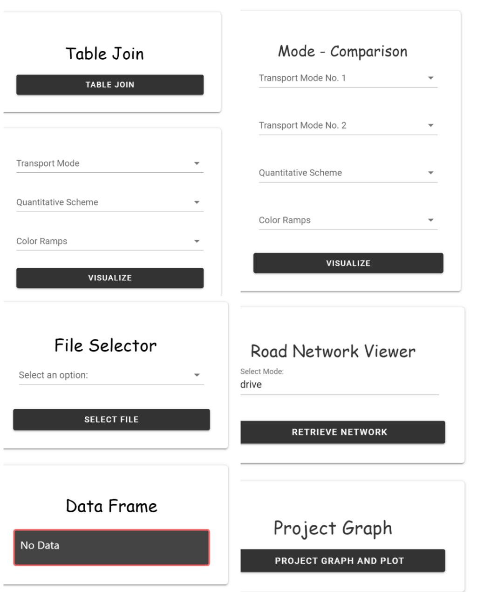
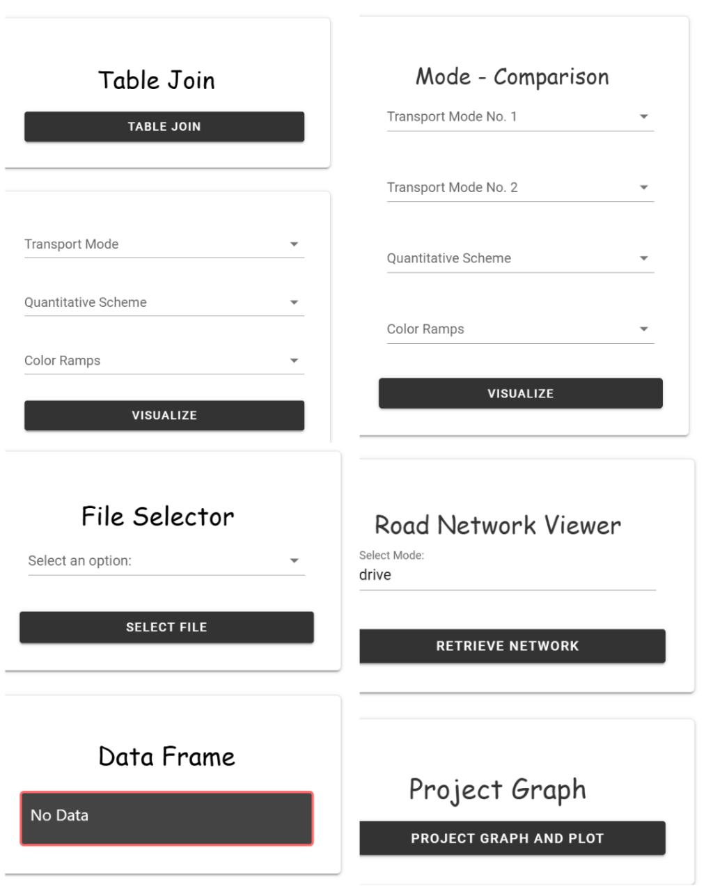

Access Viz
A spatial data analytics application for travel time insights in Helsinki.

 

Project Details
Access Viz is an interactive spatial analytics tool built using Python and the Solara framework.
It helps users explore and analyze travel time accessibility across the Helsinki metropolitan area.
The app provides a clean and intuitive interface for visualizing accessibility patterns and supports
planning decisions in transportation and urban development.
Tools & Technologies: Python, Solara, Pandas, GeoPandas, OpenStreetMap, Matplotlib